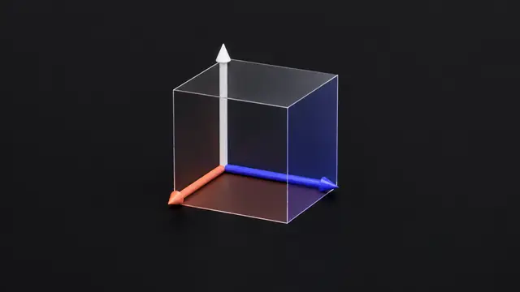

Perpendicular subspaces, projections, the best answer when Ax = b has no solution, fitting lines to data, and orthonormal bases built by Gram-Schmidt. 8 short slides, then worked examples and problems. Each slide has an everyday picture, a worked example and Python you can run right on the page.
Free preview: most of every slide is yours to read, with its Python lab. Members get the full text, every example with its solution, and five extra problems per lesson.
 Lesson 5OrthogonalityPerpendicular vectors and perpendicular subspacesOpen slide →01 · Strang §4.1 · Orthogonality of the four subspaces
Lesson 5OrthogonalityPerpendicular vectors and perpendicular subspacesOpen slide →01 · Strang §4.1 · Orthogonality of the four subspacesPerpendicular vectors have dot product zero. The row space is perpendicular to the null space. Examples and live Python. Strang §4.1.
Free previewLesson 5ProjectionProjecting a vector onto a lineOpen slide →02 · Strang §4.2 · ProjectionsProject b onto the line through a: p = (aᵀb / aᵀa) a, the closest point, with the error perpendicular to a. Examples and Python. Strang §4.2.
Free preview Lesson 5Projection matrixThe projection matrix POpen slide →03 · Strang §4.2 · Projection matrices
Lesson 5Projection matrixThe projection matrix POpen slide →03 · Strang §4.2 · Projection matricesThe projection onto a line is Pb with P = aaᵀ/aᵀa. Onto the column space of A, P = A(AᵀA)⁻¹Aᵀ. Why P² = P, with examples and Python. Strang §4.2.
Free preview Lesson 5Least squaresLeast squares: the best answer when Ax = b has no solutionOpen slide →04 · Strang §4.3 · Least squares approximations
Lesson 5Least squaresLeast squares: the best answer when Ax = b has no solutionOpen slide →04 · Strang §4.3 · Least squares approximationsWhen Ax = b has no solution, least squares finds the best x̂ by solving AᵀAx̂ = Aᵀb. Why it works, worked examples and Python. Strang §4.3.
Free preview Lesson 5Line fittingFitting a straight line to dataOpen slide →05 · Strang §4.3 · Fitting a straight line
Lesson 5Line fittingFitting a straight line to dataOpen slide →05 · Strang §4.3 · Fitting a straight lineFit the best straight line C + Dt to noisy sensor data. Drag C and D to shrink the squared error, then solve the normal equations. Strang §4.3.
Free preview
Lesson 5Orthonormal basesOrthonormal vectors and orthogonal matrices QOpen slide →06 · Strang §4.4 · Orthonormal basesOrthonormal vectors are perpendicular with length 1. In Q they give QᵀQ = I and Q⁻¹ = Qᵀ. Rotations, examples and Python. Strang §4.4.
Free preview Lesson 5Gram-SchmidtGram-Schmidt: making vectors orthonormalOpen slide →07 · Strang §4.4 · The Gram-Schmidt process
Lesson 5Gram-SchmidtGram-Schmidt: making vectors orthonormalOpen slide →07 · Strang §4.4 · The Gram-Schmidt processGram-Schmidt turns independent vectors into an orthonormal basis: subtract projections, divide by length, and get A = QR. Strang §4.4.
Free preview Lesson 5RecapWhat you can now do.Open slide →08 · Recap · Reading
Lesson 5RecapWhat you can now do.Open slide →08 · Recap · ReadingChapter 4 on one page: orthogonal subspaces, projections, least squares and the normal equations, line fitting, orthonormal bases, Gram-Schmidt.